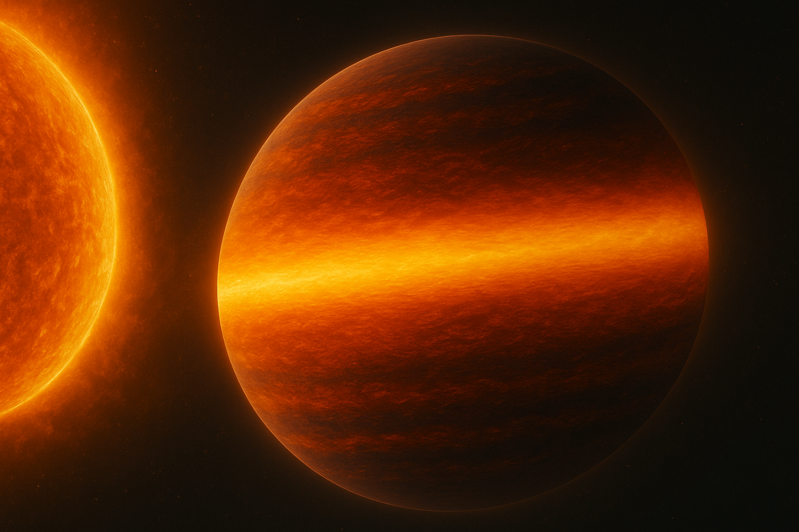
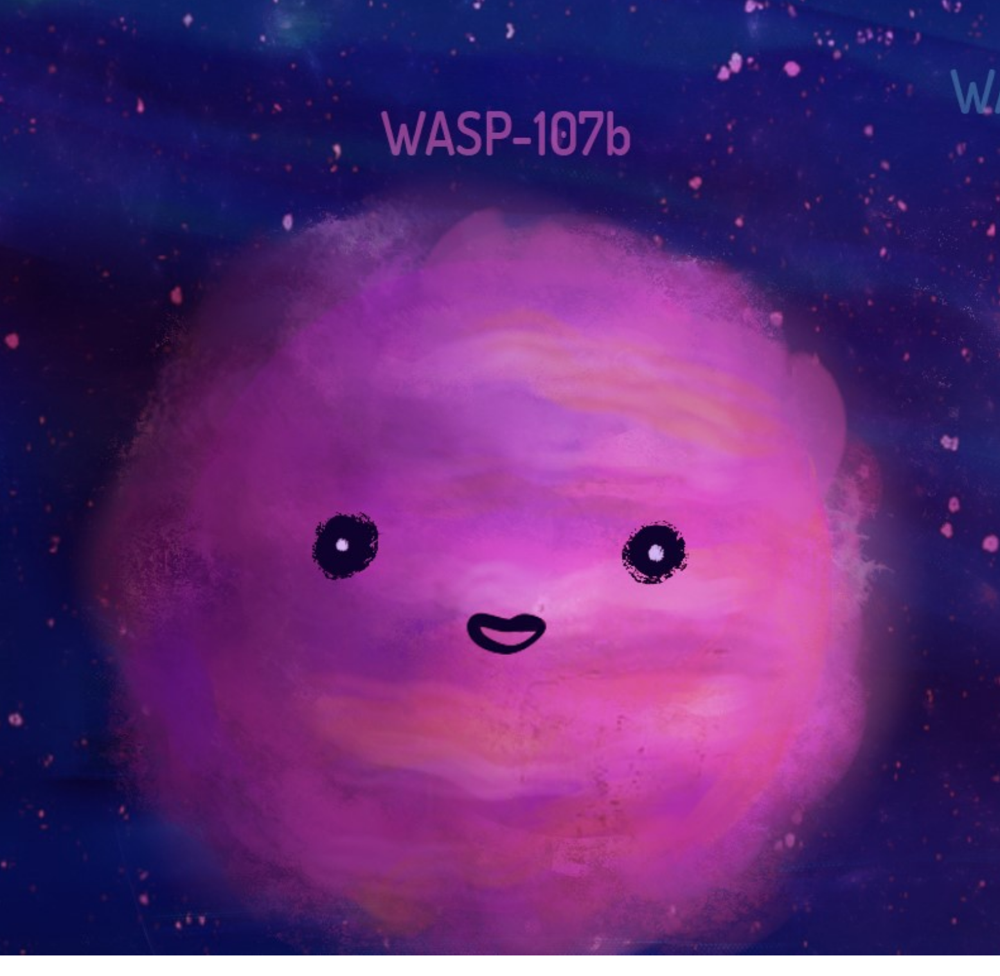
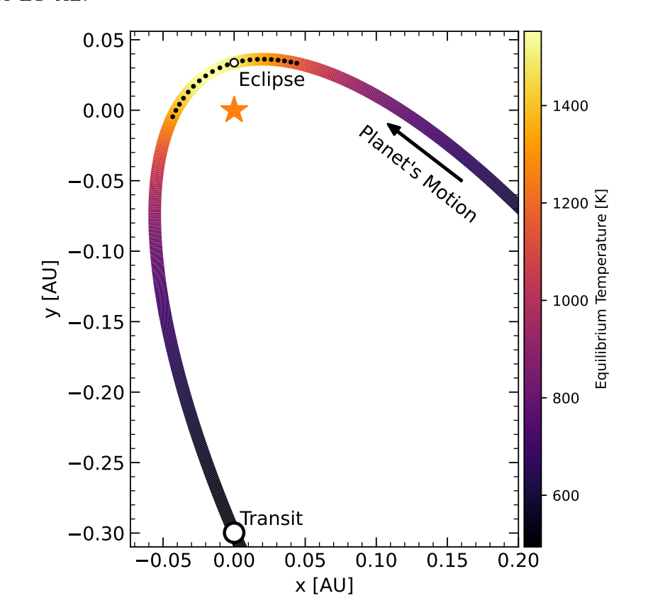

My research focuses on uncovering the mysteries of distant worlds by studying their atmospheres. I specialize in using infrared spectroscopic phase curves, a powerful method for exploring the three-dimensional structure of exoplanet atmospheres. Through a technique called spectral retrieval, I analyze these observations to map atmospheric properties, construct energy balance models, identify wind and cloud patterns, and reveal the chemical composition of these alien worlds.
Coding and Analysis Skills
Throughout my current degree and my past Master of Data Science I have earned some extensive coding and analysis skills. For exoplanet science, I have knowledge in end-to-end analysis (observation -> data). For JWST data reduction I have experience with the exoTEDRF and Eureka!pipelines. For spectral retrieval for atmospheric inference I have experience with PyratBay and have recently dabbled with TauREx and petitRADTRANS. I also have experience using the toy energy balance model BELL_EBM which includes models for H2 dissociation in ultra-hot Jupiters.
I love to collaborate! If you're interested in making use of any of my skills/knowledge please don't hesitate to email me.
Currently, I'm applying my expertise to study WASP-121b, an ultra-hot Jupiter, using high-quality thermal emission data collected by the James Webb Space Telescope (JWST).
My Projects
The Energy Budget of WASP-121 b with a JWST NIRISS/SOSS Phase Curve

Figure: AI-generated image of an ultra-hot Jupiter.
I recently submitted a paper providing precise constraints on the popular ultra-hot Jupiter WASP-121b. We obtained these constraints from a Phase Curve with a JWST NIRISS/SOSS observation as part of the NEAT Guaranteed Time Observation. From the probed wavelength range (0.6--2.85 micron) we capture an estimated 54--83% of the planet's bolometric flux, enabling the most concise constraints on the planet's energy budget to date. With this observation we are able to bridge the gap in previous phase curve observation estimates of Bond albedo and heat recirculation efficiency. We further investigate the wavelength dependent phase offset and reflected light at the short optical wavelengths and compare the retrieved effective temperature curve to a grid of toy energy balance models.
This work is published in the Astronomical Journal, check it out!
Side Projects
Spectral Retrieval of Transmission of WASP-107b with JWST NIRISS/SOSS

Figure Credit: Daria Kiselava/ McGill Tribune
.
WASP-107b is a ultra-low-density super-Neptune also known as a puffy planet or a 'super puff'. As part of the NEAT Guaranteed Time Observation we obtained a transit of the planet with JWST NIRISS/SOSS. My contribution was to provide spectral retrieval analysis with PyratBay, 1 of 3 retrieval codes used. However the main result of the paper was the discovery and modeling of a continuous helium signature indicating an escaping atmosphere pre and post transit indicating the power of JWST to detect the helium triplet in exoplanet atmospheres and potential for modelling the escaping atmosphere structure in other exoplanets.
This paper is currently under review for Nature Astronomy, you can find the preprint here
Spectral Retrieval of the Highly Eccentric Planet HD 80606b with a Partial JWST NIRSpec/G395H Phase Curve

Figure: Diagram showing HD 80806b's orbital motion and the observation at phases near eclipse (Sikora et al. 2024).
I was involved in running spectral retrieval on the highly eccentric (e ~ 0.931; P ~ 111.4 days) Jupiter sized planet HD 80606b. In particular, I ran spectral retrieval analysis with PyratBay in emission at various orbital phases. In combination with the fiducial retrieval our results were in agreement showing a change in chemistry as the planet heated up as it got closer to the star.
In particular, our analysis found changing features in CO and CH4 before and after periapses. Such an analysis validated our predictions as well as serving to provide more confidence in the results of popular spectral retrieval codes and as a bonus to show the feasibility of partial phase curves with JWST NIRSpec G395H
This paper was recently accepted to The Astronomical Journal, you can find the preprint here
I'm also interested in advancing how we analyze exoplanet phase curves. As part of my work, I'm benchmarking different spectral retrieval methods to identify the most effective techniques for interpreting these complex datasets. This effort is critical as we prepare for the launch of the European Space Agency's ARIEL telescope in 2029, which will usher in a new era of exoplanet exploration.
Through this research, I hope to push the boundaries of our understanding of exoplanetary atmospheres and contribute to the broader effort of uncovering what these distant worlds are truly like.